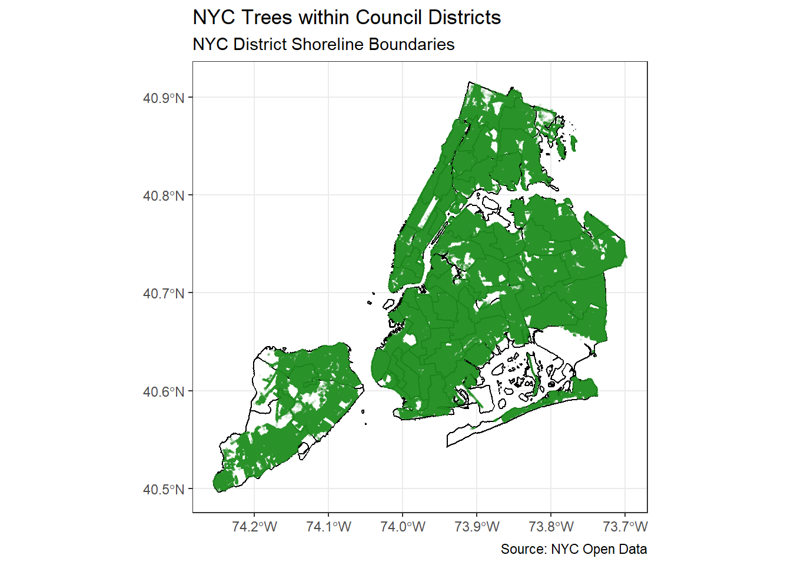

Requesting items 0 to 50000
Requesting items 50000 to 1e+05
Requesting items 1e+05 to 150000
Requesting items 150000 to 2e+05
Requesting items 2e+05 to 250000
Requesting items 250000 to 3e+05
Requesting items 3e+05 to 350000
Requesting items 350000 to 4e+05
Requesting items 4e+05 to 450000
Requesting items 450000 to 5e+05
Requesting items 5e+05 to 550000
Requesting items 550000 to 6e+05
Requesting items 6e+05 to 650000
Requesting items 650000 to 7e+05
Requesting items 7e+05 to 750000
Requesting items 750000 to 8e+05
Requesting items 8e+05 to 850000
Requesting items 850000 to 9e+05
Requesting items 9e+05 to 950000
Requesting items 950000 to 1e+06
Requesting items 1e+06 to 1050000
Requesting items 1050000 to 1100000
End of Data Export Reached
#changing the geometry column into spatial data nyc_trees <-st_as_sf(nyc_trees, wkt ="geometry", crs ="WGS84")#plotting all the trees in nycggplot() +geom_sf(data = nyc_boundaries, fill ="white", color ="black", linewidth =0.5) +geom_sf(data = nyc_trees, color ="forestgreen", alpha =0.07, size =0.3) +theme_bw() +labs(title ="NYC Trees within Council Districts",subtitle ="NYC District Shoreline Boundaries ",caption ="Source: NYC Open Data")

District-Level Analysis of Tree Coverage
Joining the Trees and NYC City Council District datasets